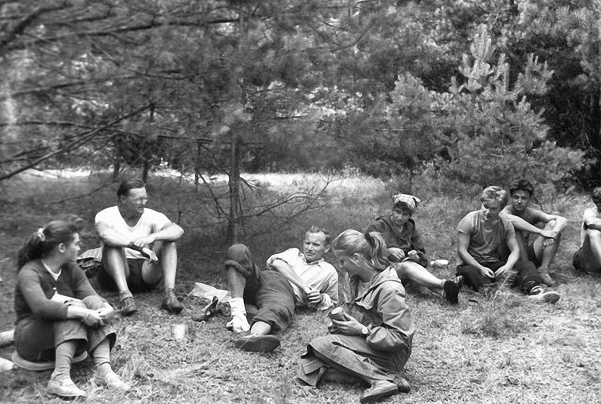
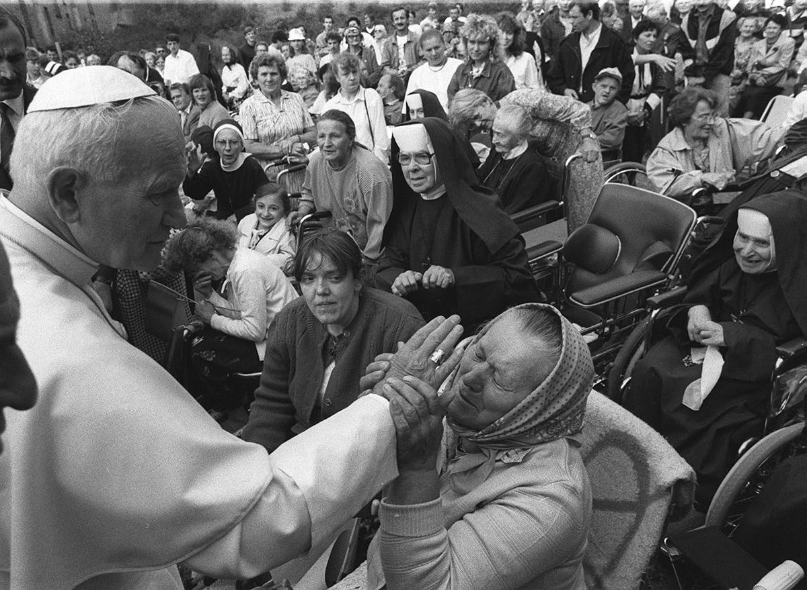
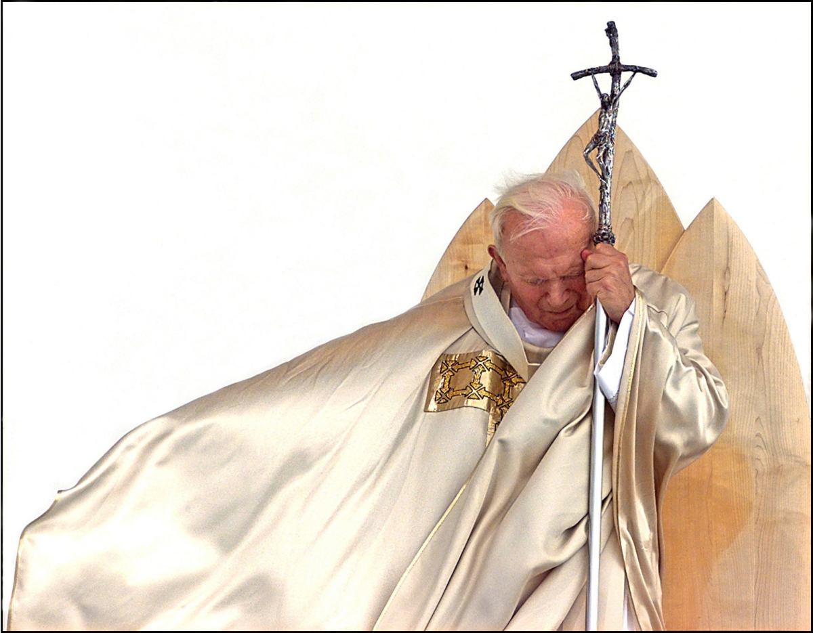

St. John Paul II, Latin Johannes Paulus, original name Karol Józef Wojtyła, (born May 18, 1920, Wadowice, Poland—died April 2, 2005, Vatican City; beatified May 1, 2011; canonized April 27, 2014; feast day October 22), bishop of Rome and head of the Roman Catholic Church (1978–2005), the first non-Italian pope in 455 years and the first from a Slavic country. His pontificate of more than 26 years was the third longest in history. As part of his effort to promote greater understanding between nations and between religions, he undertook numerous trips abroad, traveling far greater distances than had all other popes combined, and he extended his influence beyond the church by campaigning against political oppression and criticizing the materialism of the West. He also issued several unprecedented apologies to groups that historically had been wronged by Catholics, most notably Jews and Muslims. His unabashed Polish nationalism and his emphasis on nonviolent political activism aided the Solidarity movement in communist Poland in the 1980s and ultimately contributed to the peaceful dissolution of the Soviet Union in 1991. More generally, John Paul used his influence among Catholics and throughout the world to advance the recognition of human dignity and to deter the use of violence. His centralized style of church governance, however, dismayed some members of the clergy, who found it autocratic and stifling. He failed to reverse an overall decline in the numbers of priests and nuns, and his traditional interpretations of church teachings on personal and sexual morality alienated some segments of the laity.
Who was John Paul 2?
Click on the image to get a bigger picture:



Teachings
Notable Apostolic Exhortations of Pope John Paul II include:
- Catechesi Tradendae (Catechesis in Our Time, 1979)
- Christifideles laici (Christ’s Faithful People, 1988)
- Ecclesia in America (The Church in America, 1999)
- Ecclesia in Asia (The Church in Asia, 1999)
- Ecclesia in Europa (The Church in Europe)
- Familiaris consortio (The Christian Family in the Modern World, 1981)
- Pastores dabo vobis (Shepherds After My Own Heart (on priestly formation), 1992)
- Pastores gregis (The Shepherds of the Lord's Flock, 2003)
- Reconciliatio et paenitentia (Reconciliation and Penance, 1984)
- Redemptoris custos (Guardian of the Redeemer (On the person and mission of Saint Joseph), 1989)
- Vita consecrata (Consecrated Life, 1996)